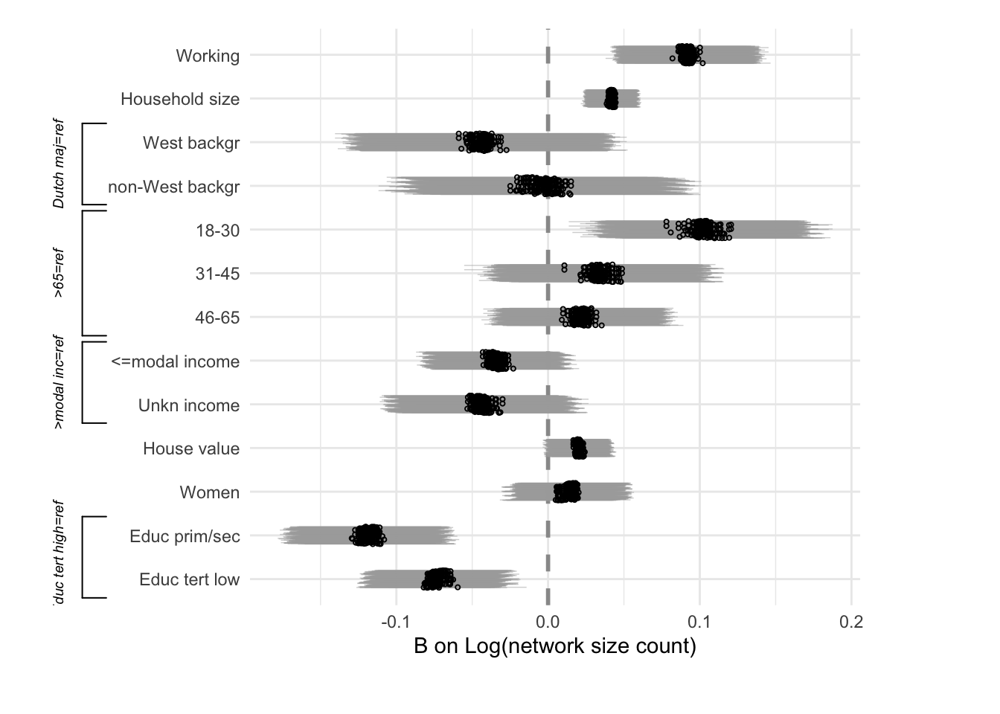

Last compiled on August, 2023
This is the code with which we run our inferential analyses.
Initatiating R
environment
Start out with a custom function to load a set of required
packages.
# packages and read data
rm(list = ls())
# (c) Jochem Tolsma
fpackage.check <- function(packages) {
lapply(packages, FUN = function(x) {
if (!require(x, character.only = TRUE)) {
install.packages(x, dependencies = TRUE)
library(x, character.only = TRUE)
}
})
}
packages = c("haven", "coda", "matrixStats", "parallel", "MASS", "doParallel", "dplyr", "cowplot", "tidyverse",
"naniar", "dotwhisker", "gt", "reshape2", "VGAM", "expss", "Hmisc")
fpackage.check(packages)
#> [[1]]
#> NULL
#>
#> [[2]]
#> NULL
#>
#> [[3]]
#> NULL
#>
#> [[4]]
#> NULL
#>
#> [[5]]
#> NULL
#>
#> [[6]]
#> NULL
#>
#> [[7]]
#> NULL
#>
#> [[8]]
#> NULL
#>
#> [[9]]
#> NULL
#>
#> [[10]]
#> NULL
#>
#> [[11]]
#> NULL
#>
#> [[12]]
#> NULL
#>
#> [[13]]
#> NULL
#>
#> [[14]]
#> NULL
#>
#> [[15]]
#> NULL
#>
#> [[16]]
#> NULL
rm(packages)
load("data/dutch_netsize_analyses.rda")
Linear regression
models
We run a series of regression models of logged acquantanceship
network size (as it is right-skewed) on our independent and control
variables. We thus run 172 different regression models (all
scenarios).
######################## MODELS
# some final data handling to assign the correct reference categories
df$opl <- relevel(df$opl, ref = 1)
df$migr3 <- relevel(as.factor(df$migr3), ref = 1)
df$income <- relevel(as.factor(df$income), ref = 2)
# 172 regressions with different netsizes. We then look at distributions of coefficients across
# those. note the log10 for network size and how we don't take into account extreme network size.
modellog <- list()
for (i in 14:185) {
df[, c(i)] <- round(df[, c(i)], 0)
modellog[[i]] <- lm(log10(df[!df[[i]] > 5000, c(i)]) ~ as.factor(work) + hhsize + as.factor(income) +
leeftijd10 + as.factor(migr3) + as.factor(woman) + as.factor(opl) + neighdens + worthhouse, data = df[!df[[i]] >
5000, ])
}
modellog[sapply(modellog, is.null)] <- NULL
Visualization of
regression models
We then render all those models into one figure where we can show
statistical signifance and that results do not vary over all those
scenarios.
#--------------------------------------------------------------------------------
# Viz of results
# main effects
three_brackets <- list(
c(">modal inc=ref", "<=modal income", "Unkn income"),
c("Dutch maj=ref", "West backgr", "non-West backgr"),
c("Educ tert high=ref", "Educ prim/sec", "Educ tert low"))
logmodel <- {dwplot(modellog,
dot_args = list(color = "black", size = 0.75, shape = 1), # color for the dot
whisker_args = list(size = 0.25, color = "darkgrey", alpha = 0.5), # color for the whisker
vline = ggplot2::geom_vline(xintercept = 0, # put vline _behind_ coefs; see https://github.com/fsolt/dotwhisker/issues/84
colour = "grey60",
linetype = 2,
size = 1)) %>% # make model variable
relabel_predictors(c(
"as.factor(work)1" = "Working",
"hhsize" = "Household size",
"as.factor(income)1" = "<=modal income",
"as.factor(income)3" = "Unkn income",
"leeftijd10" = "Age/10",
"as.factor(migr3)2" = "West backgr",
"as.factor(migr3)3" = "non-West backgr",
"as.factor(woman)1" = "Women",
"as.factor(opl)1" = "Educ prim/sec",
"as.factor(opl)2" = "Educ tert low",
"neighdens" = "Neigh. density",
"worthhouse" = "WOZ-values"
)) + theme(legend.position = "none",
axis.text = element_text(color = "grey")) +
theme_minimal() +
xlab("B on Log(network size count)")} %>%
add_brackets(three_brackets, fontSize = .6)
logmodel

Regression table
We also average all 172 network size scenarios within respondents and
run one single regression model so as to generate a table with
coefficients.
df$netsize <- round(rowSums(df[, c(14:185)])/length(14:185), 0)
modell <- lm(log10(netsize) ~ as.factor(work) + hhsize + as.factor(income) + leeftijd10 + as.factor(migr3) +
as.factor(woman) + as.factor(opl) + neighdens + worthhouse, data = df[!df[["netsize"]] > 5000, ])
modellin <- lm(netsize ~ as.factor(work) + hhsize + as.factor(income) + leeftijd10 + as.factor(migr3) +
as.factor(woman) + as.factor(opl) + neighdens + worthhouse, data = df[!df[["netsize"]] > 5000, ])
fpackage.check("sjPlot")
#> [[1]]
#> NULL
tab_model(modell, modellin)
|
|
log10(netsize)
|
netsize
|
|
Predictors
|
Estimates
|
CI
|
p
|
Estimates
|
CI
|
p
|
|
(Intercept)
|
2.54
|
2.42 – 2.66
|
<0.001
|
465.85
|
318.50 – 613.21
|
<0.001
|
|
work [1]
|
0.09
|
0.04 – 0.13
|
<0.001
|
59.86
|
10.69 – 109.02
|
0.017
|
|
hhsize
|
0.04
|
0.02 – 0.06
|
<0.001
|
30.17
|
9.37 – 50.97
|
0.005
|
|
income [1]
|
-0.04
|
-0.08 – 0.01
|
0.113
|
-25.78
|
-78.76 – 27.21
|
0.340
|
|
income [3]
|
-0.04
|
-0.10 – 0.01
|
0.128
|
-21.90
|
-91.38 – 47.58
|
0.536
|
|
leeftijd10
|
-0.02
|
-0.03 – -0.01
|
0.003
|
-20.17
|
-35.74 – -4.60
|
0.011
|
|
migr3 [2]
|
-0.05
|
-0.13 – 0.03
|
0.244
|
-32.58
|
-131.04 – 65.89
|
0.516
|
|
migr3 [3]
|
-0.00
|
-0.09 – 0.08
|
0.927
|
19.46
|
-84.52 – 123.44
|
0.714
|
|
woman [1]
|
0.01
|
-0.02 – 0.05
|
0.460
|
4.09
|
-39.52 – 47.70
|
0.854
|
|
opl [1]
|
-0.12
|
-0.17 – -0.07
|
<0.001
|
-93.82
|
-153.52 – -34.12
|
0.002
|
|
opl [2]
|
-0.08
|
-0.12 – -0.03
|
0.001
|
-74.40
|
-128.23 – -20.57
|
0.007
|
|
neighdens
|
-0.00
|
-0.01 – 0.01
|
0.916
|
-0.58
|
-14.77 – 13.61
|
0.936
|
|
worthhouse
|
0.02
|
0.00 – 0.04
|
0.040
|
26.89
|
2.08 – 51.70
|
0.034
|
|
Observations
|
1247
|
1247
|
|
R2 / R2 adjusted
|
0.129 / 0.121
|
0.066 / 0.057
|
Ci0tLQp0aXRsZTogIkluZmVyZW50aWFsIGFuYWx5c2VzIgojYmlibGlvZ3JhcGh5OiByZWZlcmVuY2VzLmJpYgphdXRob3I6ICJCYXMgSG9mc3RyYSIKLS0tCgpgYGB7ciwgZ2xvYmFsc2V0dGluZ3MsIGVjaG89RkFMU0UsIHdhcm5pbmc9RkFMU0UsIHJlc3VsdHM9J2hpZGUnfQpsaWJyYXJ5KGtuaXRyKQoKa25pdHI6Om9wdHNfY2h1bmskc2V0KGVjaG8gPSBUUlVFKQpvcHRzX2NodW5rJHNldCh0aWR5Lm9wdHM9bGlzdCh3aWR0aC5jdXRvZmY9MTAwKSx0aWR5PVRSVUUsIHdhcm5pbmcgPSBGQUxTRSwgbWVzc2FnZSA9IEZBTFNFLGNvbW1lbnQgPSAiIz4iLCBjYWNoZT1UUlVFLCBjbGFzcy5zb3VyY2U9YygidGVzdCIpLCBjbGFzcy5vdXRwdXQ9YygidGVzdDIiKSkKb3B0aW9ucyh3aWR0aCA9IDEwMCkKcmdsOjpzZXR1cEtuaXRyKCkKCgoKY29sb3JpemUgPC0gZnVuY3Rpb24oeCwgY29sb3IpIHtzcHJpbnRmKCI8c3BhbiBzdHlsZT0nY29sb3I6ICVzOyc+JXM8L3NwYW4+IiwgY29sb3IsIHgpIH0KCmBgYAoKYGBge3Iga2xpcHB5LCBlY2hvPUZBTFNFLCBpbmNsdWRlPVRSVUV9CmtsaXBweTo6a2xpcHB5KHBvc2l0aW9uID0gYygndG9wJywgJ3JpZ2h0JykpCiNrbGlwcHk6OmtsaXBweShjb2xvciA9ICdkYXJrcmVkJykKI2tsaXBweTo6a2xpcHB5KHRvb2x0aXBfbWVzc2FnZSA9ICdDbGljayB0byBjb3B5JywgdG9vbHRpcF9zdWNjZXNzID0gJ0RvbmUnKQpgYGAKCkxhc3QgY29tcGlsZWQgb24gYHIgZm9ybWF0KFN5cy50aW1lKCksICclQiwgJVknKWAKCjxicj4KCi0tLS0KClRoaXMgaXMgdGhlIGNvZGUgd2l0aCB3aGljaCB3ZSBydW4gb3VyIGluZmVyZW50aWFsIGFuYWx5c2VzLgoKPGJyPgoKLS0tLQoKIyBJbml0YXRpYXRpbmcgUiBlbnZpcm9ubWVudAoKU3RhcnQgb3V0IHdpdGggYSBjdXN0b20gZnVuY3Rpb24gdG8gbG9hZCBhIHNldCBvZiByZXF1aXJlZCBwYWNrYWdlcy4KICAKYGBge3IgcGFjaywgZXZhbD1UUlVFfQojIHBhY2thZ2VzIGFuZCByZWFkIGRhdGEKcm0obGlzdCA9IGxzKCkpCgojIChjKSBKb2NoZW0gVG9sc21hCmZwYWNrYWdlLmNoZWNrIDwtIGZ1bmN0aW9uKHBhY2thZ2VzKSB7CiAgbGFwcGx5KHBhY2thZ2VzLCBGVU4gPSBmdW5jdGlvbih4KSB7CiAgICBpZiAoIXJlcXVpcmUoeCwgY2hhcmFjdGVyLm9ubHkgPSBUUlVFKSkgewogICAgICBpbnN0YWxsLnBhY2thZ2VzKHgsIGRlcGVuZGVuY2llcyA9IFRSVUUpCiAgICAgIGxpYnJhcnkoeCwgY2hhcmFjdGVyLm9ubHkgPSBUUlVFKQogICAgfQogIH0pCn0KcGFja2FnZXMgPSBjKCJoYXZlbiIsICJjb2RhIiwgIm1hdHJpeFN0YXRzIiwgInBhcmFsbGVsIiwgIk1BU1MiLCAiZG9QYXJhbGxlbCIsICJkcGx5ciIsICJjb3dwbG90IiwgCiAgICAgICAgICAgICAidGlkeXZlcnNlIiwgIm5hbmlhciIsICJkb3R3aGlza2VyIiAsImd0IiwgInJlc2hhcGUyIiwgIlZHQU0iLCAiZXhwc3MiLCAiSG1pc2MiKQpmcGFja2FnZS5jaGVjayhwYWNrYWdlcykKcm0ocGFja2FnZXMpCmxvYWQoImRhdGEvZHV0Y2hfbmV0c2l6ZV9hbmFseXNlcy5yZGEiKQpgYGAKCjxicj4KCi0tLS0KCiMgTGluZWFyIHJlZ3Jlc3Npb24gbW9kZWxzCgpXZSBydW4gYSBzZXJpZXMgb2YgcmVncmVzc2lvbiBtb2RlbHMgb2YgbG9nZ2VkIGFjcXVhbnRhbmNlc2hpcCBuZXR3b3JrIHNpemUgKGFzIGl0IGlzIHJpZ2h0LXNrZXdlZCkgb24gb3VyIGluZGVwZW5kZW50IGFuZCBjb250cm9sIHZhcmlhYmxlcy4gV2UgdGh1cyBydW4gMTcyIGRpZmZlcmVudCByZWdyZXNzaW9uIG1vZGVscyAoYWxsIHNjZW5hcmlvcykuCgpgYGB7ciByZWdzLCBldmFsID0gVFJVRX0KCgojIyMjIyMjIyMjIyMjIyMjIyMjIyMjIyMKIyBNT0RFTFMKIyMjIyMjIyMjIyMjIyMjIyMjIyMjIyMKCgojIHNvbWUgZmluYWwgZGF0YSBoYW5kbGluZyB0byBhc3NpZ24gdGhlIGNvcnJlY3QgcmVmZXJlbmNlIGNhdGVnb3JpZXMKZGYkb3BsIDwtcmVsZXZlbChkZiRvcGwsIHJlZiA9IDEpCmRmJG1pZ3IzIDwtcmVsZXZlbChhcy5mYWN0b3IoZGYkbWlncjMpLCByZWYgPSAxKQpkZiRpbmNvbWUgPC1yZWxldmVsKGFzLmZhY3RvcihkZiRpbmNvbWUpLCByZWYgPSAyKQoKICMgMTcyIHJlZ3Jlc3Npb25zIHdpdGggZGlmZmVyZW50IG5ldHNpemVzLiBXZSB0aGVuIGxvb2sgYXQgZGlzdHJpYnV0aW9ucyBvZiBjb2VmZmljaWVudHMgYWNyb3NzIHRob3NlLgojIG5vdGUgdGhlIGxvZzEwIGZvciBuZXR3b3JrIHNpemUgYW5kIGhvdyB3ZSBkb24ndCB0YWtlIGludG8gYWNjb3VudCBleHRyZW1lIG5ldHdvcmsgc2l6ZS4KbW9kZWxsb2cgPC0gbGlzdCgpCmZvciAoaSBpbiAxNDoxODUpIHsKICAgIAogICAgZGZbLGMoaSldIDwtIHJvdW5kKGRmWywgYyhpKV0sIDApCiAgICAKICAgIG1vZGVsbG9nW1tpXV0gPC0gbG0obG9nMTAoZGZbIWRmW1tpXV0+NTAwMCwgYyhpKV0pIH4gCiAgICAgICAgICAgICAgICAgICAgICAgICAgYXMuZmFjdG9yKHdvcmspICsgCiAgICAgICAgICAgICAgICAgICAgICAgICAgaGhzaXplICsgCiAgICAgICAgICAgICAgICAgICAgICAgICAgYXMuZmFjdG9yKGluY29tZSkgKyAKICAgICAgICAgICAgICAgICAgICAgICAgICBsZWVmdGlqZDEwICsgCiAgICAgICAgICAgICAgICAgICAgICAgICAgYXMuZmFjdG9yKG1pZ3IzKSArIAogICAgICAgICAgICAgICAgICAgICAgICAgIGFzLmZhY3Rvcih3b21hbikgKyAKICAgICAgICAgICAgICAgICAgICAgICAgICBhcy5mYWN0b3Iob3BsKSArIAogICAgICAgICAgICAgICAgICAgICAgICAgIG5laWdoZGVucyArIAogICAgICAgICAgICAgICAgICAgICAgICAgIHdvcnRoaG91c2UsCiAgICAgICAgICAgICAgICAgICAgICAgIGRhdGEgPSBkZlshZGZbW2ldXT41MDAwLF0pCiAgICAKfQptb2RlbGxvZ1tzYXBwbHkobW9kZWxsb2csIGlzLm51bGwpXSA8LSBOVUxMCmBgYAoKPGJyPgoKLS0tLQoKIyBWaXN1YWxpemF0aW9uIG9mIHJlZ3Jlc3Npb24gbW9kZWxzCgpXZSB0aGVuIHJlbmRlciBhbGwgdGhvc2UgbW9kZWxzIGludG8gb25lIGZpZ3VyZSB3aGVyZSB3ZSBjYW4gc2hvdyBzdGF0aXN0aWNhbCBzaWduaWZhbmNlIGFuZCB0aGF0IHJlc3VsdHMgZG8gbm90IHZhcnkgb3ZlciBhbGwgdGhvc2Ugc2NlbmFyaW9zLgoKCmBgYHtyIHJlZ3ZpeiwgZXZhbCA9IFRSVUV9CiMtLS0tLS0tLS0tLS0tLS0tLS0tLS0tLS0tLS0tLS0tLS0tLS0tLS0tLS0tLS0tLS0tLS0tLS0tLS0tLS0tLS0tLS0tLS0tLS0tLS0tLS0tLQojIFZpeiBvZiByZXN1bHRzCgojIG1haW4gZWZmZWN0cwp0aHJlZV9icmFja2V0cyA8LSBsaXN0KAogIGMoIj5tb2RhbCBpbmM9cmVmIiwgIjw9bW9kYWwgaW5jb21lIiwgIlVua24gaW5jb21lIiksCiAgYygiRHV0Y2ggbWFqPXJlZiIsICJXZXN0IGJhY2tnciIsICJub24tV2VzdCBiYWNrZ3IiKSwKICBjKCJFZHVjIHRlcnQgaGlnaD1yZWYiLCAiRWR1YyBwcmltL3NlYyIsICJFZHVjIHRlcnQgbG93IikpCgogbG9nbW9kZWwgPC0ge2R3cGxvdChtb2RlbGxvZywKICAgICAgICAgZG90X2FyZ3MgPSBsaXN0KGNvbG9yID0gImJsYWNrIiwgc2l6ZSA9IDAuNzUsIHNoYXBlID0gMSksICMgY29sb3IgZm9yIHRoZSBkb3QKICAgICAgICAgd2hpc2tlcl9hcmdzID0gbGlzdChzaXplID0gMC4yNSwgY29sb3IgPSAiZGFya2dyZXkiLCBhbHBoYSA9IDAuNSksICAgIyBjb2xvciBmb3IgdGhlIHdoaXNrZXIKICAgICAgICAgdmxpbmUgPSBnZ3Bsb3QyOjpnZW9tX3ZsaW5lKHhpbnRlcmNlcHQgPSAwLCAgIyBwdXQgdmxpbmUgX2JlaGluZF8gY29lZnM7IHNlZSBodHRwczovL2dpdGh1Yi5jb20vZnNvbHQvZG90d2hpc2tlci9pc3N1ZXMvODQKICAgICAgICAgICAgICAgICAgICAgICAgICAgICAgICAgICAgIGNvbG91ciA9ICJncmV5NjAiLAogICAgICAgICAgICAgICAgICAgICAgICAgICAgICAgICAgICAgbGluZXR5cGUgPSAyLAogICAgICAgICAgICAgICAgICAgICAgICAgICAgICAgICAgICAgc2l6ZSA9IDEpKSAlPiUgICAgICAgICAgICAgICAgICAgICAgICAgICAgICAgICAgICAgIyBtYWtlIG1vZGVsIHZhcmlhYmxlCiAgICByZWxhYmVsX3ByZWRpY3RvcnMoYygKICAgICAgImFzLmZhY3Rvcih3b3JrKTEiID0gIldvcmtpbmciLAogICAgICAiaGhzaXplIiA9ICJIb3VzZWhvbGQgc2l6ZSIsCiAgICAgICJhcy5mYWN0b3IoaW5jb21lKTEiID0gIjw9bW9kYWwgaW5jb21lIiwKICAgICAgImFzLmZhY3RvcihpbmNvbWUpMyIgPSAiVW5rbiBpbmNvbWUiLAogICAgICAibGVlZnRpamQxMCIgPSAiQWdlLzEwIiwKICAgICAgImFzLmZhY3RvcihtaWdyMykyIiA9ICJXZXN0IGJhY2tnciIsCiAgICAgICJhcy5mYWN0b3IobWlncjMpMyIgPSAibm9uLVdlc3QgYmFja2dyIiwKICAgICAgImFzLmZhY3Rvcih3b21hbikxIiA9ICJXb21lbiIsCiAgICAgICJhcy5mYWN0b3Iob3BsKTEiID0gIkVkdWMgcHJpbS9zZWMiLAogICAgICAiYXMuZmFjdG9yKG9wbCkyIiA9ICJFZHVjIHRlcnQgbG93IiwKICAgICAgIm5laWdoZGVucyIgPSAiTmVpZ2guIGRlbnNpdHkiLAogICAgICAid29ydGhob3VzZSIgPSAiV09aLXZhbHVlcyIKICAgICkpICsgdGhlbWUobGVnZW5kLnBvc2l0aW9uID0gIm5vbmUiLAogICAgICAgICAgICAgICBheGlzLnRleHQgPSBlbGVtZW50X3RleHQoY29sb3IgPSAiZ3JleSIpKSArIAogICAgdGhlbWVfbWluaW1hbCgpICsKICAgIHhsYWIoIkIgb24gTG9nKG5ldHdvcmsgc2l6ZSBjb3VudCkiKX0gICU+JQogIGFkZF9icmFja2V0cyh0aHJlZV9icmFja2V0cywgZm9udFNpemUgPSAuNikKbG9nbW9kZWwKIAoKYGBgCgoKPGJyPgoKLS0tLQoKIyBSZWdyZXNzaW9uIHRhYmxlCgpXZSBhbHNvIGF2ZXJhZ2UgYWxsIDE3MiBuZXR3b3JrIHNpemUgc2NlbmFyaW9zIHdpdGhpbiByZXNwb25kZW50cyBhbmQgcnVuIG9uZSBzaW5nbGUgcmVncmVzc2lvbiBtb2RlbCBzbyBhcyB0byBnZW5lcmF0ZSBhIHRhYmxlIHdpdGggY29lZmZpY2llbnRzLgoKCmBgYHtyIHJlZ3RhYmxlLCBldmFsID0gVFJVRX0KCmRmJG5ldHNpemUgPC0gcm91bmQocm93U3VtcyhkZlssYygxNDoxODUpXSkgLyBsZW5ndGgoMTQ6MTg1KSwgMCkKCm1vZGVsbCA8LSBsbShsb2cxMChuZXRzaXplKSB+IAogICAgICAgICAgICAgICAgICAgICAgICAgIGFzLmZhY3Rvcih3b3JrKSArIAogICAgICAgICAgICAgICAgICAgICAgICAgIGhoc2l6ZSArIAogICAgICAgICAgICAgICAgICAgICAgICAgIGFzLmZhY3RvcihpbmNvbWUpICsgCiAgICAgICAgICAgICAgICAgICAgICAgICAgbGVlZnRpamQxMCArIAogICAgICAgICAgICAgICAgICAgICAgICAgIGFzLmZhY3RvcihtaWdyMykgKyAKICAgICAgICAgICAgICAgICAgICAgICAgICBhcy5mYWN0b3Iod29tYW4pICsgCiAgICAgICAgICAgICAgICAgICAgICAgICAgYXMuZmFjdG9yKG9wbCkgKyAKICAgICAgICAgICAgICAgICAgICAgICAgICBuZWlnaGRlbnMgKyAKICAgICAgICAgICAgICAgICAgICAgICAgICB3b3J0aGhvdXNlLAogICAgICAgICAgICAgICAgICAgICAgICBkYXRhID0gZGZbIWRmW1sibmV0c2l6ZSJdXT41MDAwLF0pCgptb2RlbGxpbiA8LSBsbShuZXRzaXplIH4gCiAgICAgICAgICAgICAgICAgICAgICAgICAgYXMuZmFjdG9yKHdvcmspICsgCiAgICAgICAgICAgICAgICAgICAgICAgICAgaGhzaXplICsgCiAgICAgICAgICAgICAgICAgICAgICAgICAgYXMuZmFjdG9yKGluY29tZSkgKyAKICAgICAgICAgICAgICAgICAgICAgICAgICBsZWVmdGlqZDEwICsgCiAgICAgICAgICAgICAgICAgICAgICAgICAgYXMuZmFjdG9yKG1pZ3IzKSArIAogICAgICAgICAgICAgICAgICAgICAgICAgIGFzLmZhY3Rvcih3b21hbikgKyAKICAgICAgICAgICAgICAgICAgICAgICAgICBhcy5mYWN0b3Iob3BsKSArIAogICAgICAgICAgICAgICAgICAgICAgICAgIG5laWdoZGVucyArIAogICAgICAgICAgICAgICAgICAgICAgICAgIHdvcnRoaG91c2UsCiAgICAgICAgICAgICAgICAgICAgICAgIGRhdGEgPSBkZlshZGZbWyJuZXRzaXplIl1dPjUwMDAsXSkKICAKICAKZnBhY2thZ2UuY2hlY2soInNqUGxvdCIpCnRhYl9tb2RlbChtb2RlbGwsIG1vZGVsbGluKQpgYGAKCg==